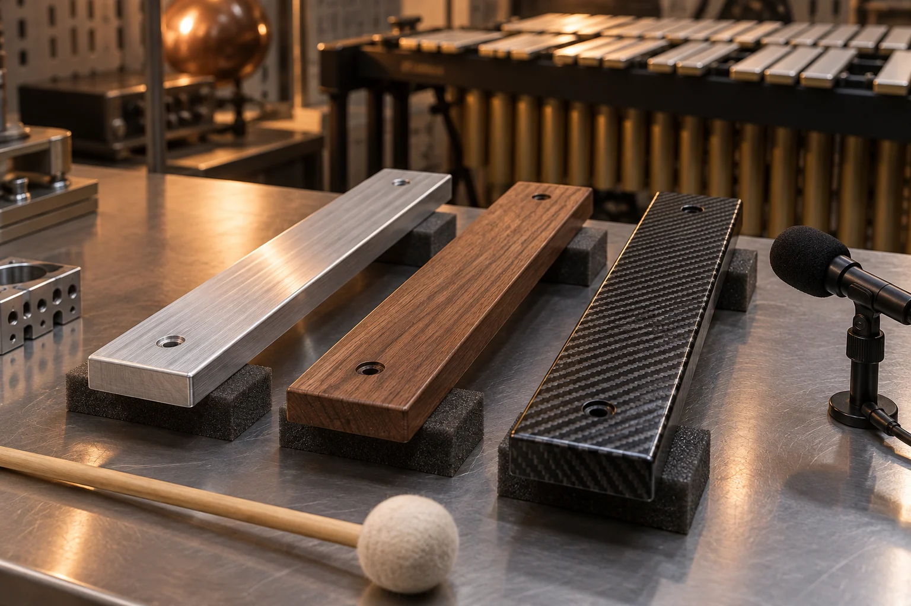
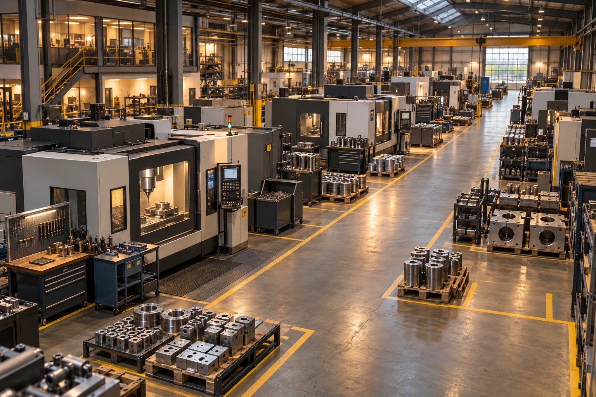

Comprendre ce qui vibre.
De la physique aux Arts et Métiers. Transformer un phénomène en modèle, puis confronter le calcul à une mesure.
Explorer le Compositeauphone ↗ÉLÈVE INGÉNIEUR · ARTS ET MÉTIERS
Gestion industrielle / Supply Chain.
Comprendre. Modéliser. Faire avancer.
De la physique aux Arts et Métiers. Transformer un phénomène en modèle, puis confronter le calcul à une mesure.
Explorer le Compositeauphone ↗1 024 empilements étudiés sous Python. Une lame fabriquée, puis accordée par la mesure. Le modèle guide ; l’expérience tranche.
Voir le résultat mesuré ↗Stocks, capacités, implantation : regarder le système dans son ensemble. Avec Chanel et Boscha, passer du diagnostic aux scénarios industriels.
Entrer dans l’atelier ↗Deux saisons PCB chez Air France. Un autre terrain pour apprendre, communiquer et contribuer à une équipe.
Lire les retours professionnels ↗Modéliser pour comprendre. Comparer pour décider.
Expérimenter pour confronter les idées au réel.
COMPRENDRE. MODÉLISER. FAIRE AVANCER.
La science prend une autre dimension lorsqu’on peut entendre son résultat.
LE COMPOSITEAUPHONE
SIGNAL / 01La de référence · synthèse d’une lame métallique
TRAVAUX SÉLECTIONNÉS / 2025–2026
Des projets collectifs aux Arts et Métiers.
Des méthodes, des choix et des résultats.

Concevoir une lame composite et trouver la note juste.
1 024 empilements explorés↗ 02ILLUSTRATION DU PROJET · IA
02ILLUSTRATION DU PROJET · IARepenser les stocks et les tailles de lots de maquillage.
Production & distribution↗
03ILLUSTRATION DU PROJET · IAComprendre les retards et réorganiser les flux d’un atelier.
Diagnostic & scénarios↗ 04ILLUSTRATION DU PROJET · IA
04ILLUSTRATION DU PROJET · IAIdentifier les paramètres qui comptent dans la fabrication.
Python & régression↗